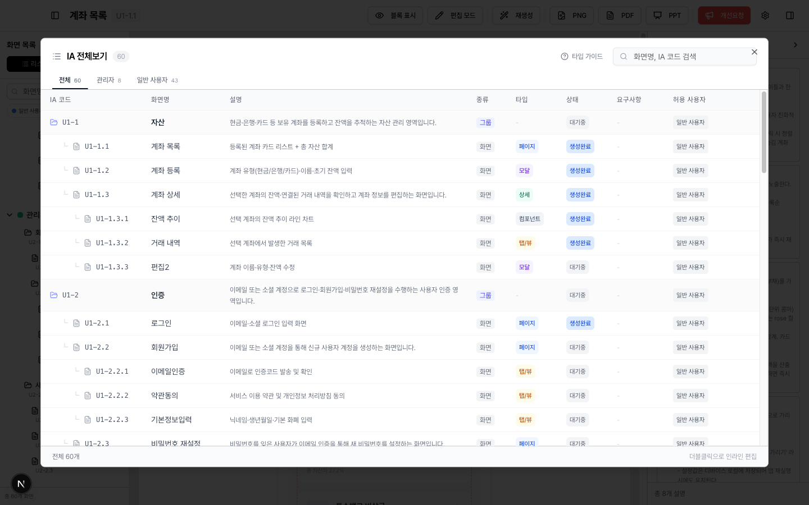
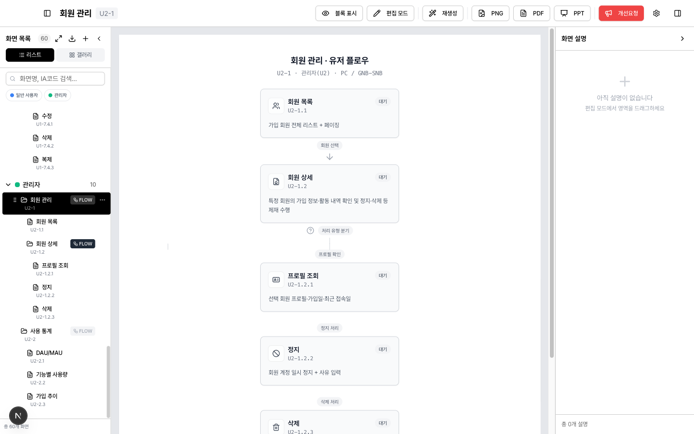
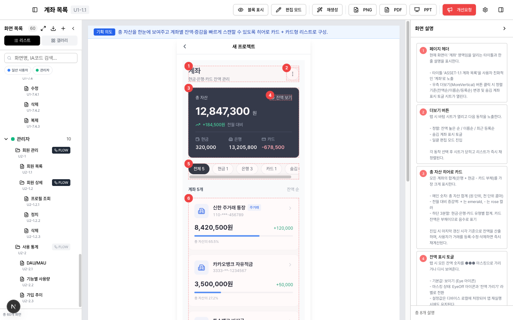
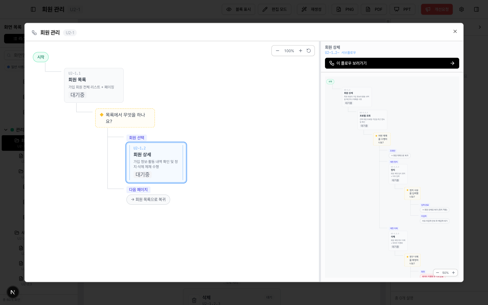

IA 자동 생성
서비스를 설명하면 사용자 유형별 화면을 계층형 코드(BUYER-1.2.3)로 구조화합니다. 페이지·모달·상세·탭·상태·컴포넌트 6가지 화면 타입으로 자동 분류해요.

만들려는 서비스를 설명하면 정보구조(IA)부터 와이어프레임, 유저 플로우까지 자동으로 설계합니다. PDF·PPTX로 내보내 그대로 공유하세요.
현재 버전 v0.1.29 · 설치 후 바로 사용 · 로그인 불필요

기획서 한 장 쓰자고 IA 짜고, 화면 그리고, 플로우 정리하고, PPT로 옮기는 데 며칠을 씁니다. 그 반복을 도구가 대신합니다.
기능
한 도구 안에서 정보구조 설계, 화면 작성, 흐름 검토, 산출물 내보내기까지 이어집니다.
서비스를 설명하면 사용자 유형별 화면을 계층형 코드(BUYER-1.2.3)로 구조화합니다. 페이지·모달·상세·탭·상태·컴포넌트 6가지 화면 타입으로 자동 분류해요.

각 화면의 와이어프레임을 갤러리·플로우에서 호버만으로 즉시 확인합니다.
화면 간 이동을 그래프로 그리고, 클릭 경로를 하이라이트해 흐름을 검토합니다.
와이어프레임 위에 번호 마커와 설명을 달아 의도를 명확히 전달합니다.
완성한 기획을 문서로 내보내 회의·공유에 그대로 사용합니다.
모든 데이터는 내 컴퓨터의 파일로 저장됩니다. 서버 업로드도, 로그인도 없습니다.
실제 화면
아래는 실제 프로젝트로 작성한 화면입니다. 와이어프레임 위 어노테이션, 화면 간 유저 플로우까지 그대로 확인하세요.

화면을 그리고, 번호 마커로 의도를 설명합니다.

화면 흐름을 다이어그램으로 보고, 카드를 누르면 하위 플로우까지 펼쳐집니다.
동작 방식
만들 서비스와 원하는 UX를 온보딩에서 설명합니다.
사용자 유형별 화면 구조를 계층형 코드로 받아 검토·수정합니다.
화면별 와이어프레임을 생성하고 유저 플로우로 흐름을 점검합니다.
PDF·PPTX·엑셀로 내보내 팀과 공유합니다.
설치하면 바로 쓸 수 있습니다. 계정도, 구독도 필요 없어요.
Mac은 Apple Silicon(M1 이상) 전용입니다. 처음 실행 시 보안 경고가 뜨면 앱을 우클릭 → 열기로 한 번만 허용하세요.